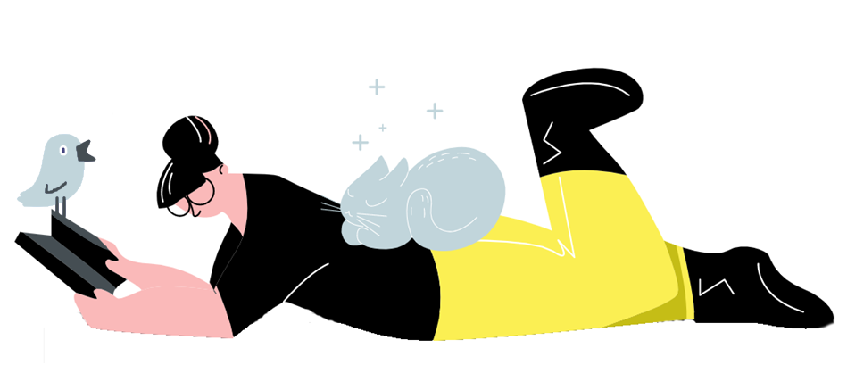

Zwierzaki, uwaga! To projekt z myślą o Was.
4 tygodnie do lepszego poznania swojego zwierzęcia
4 podstawowe maile · 4 inspiracje do wspólnego relaksu
#uwaganazwierzaka
to projekt dla każdego opiekuna psa / kota / konia / królika / małża / innego zwierzęcia, któremu zależy na zbudowaniu pełnej zrozumienia, świadomej i spokojnej relacji.Co to?!
Cztery podstawowe maile, cztery inspiracje do praktyki uważności ze swoim pupilem, filary, o które, moim zdaniem, warto zadbać. Kolejność nie jest przypadkowa, jednak nie ma konieczności „przejścia”, spróbowania każdego z nich. Uniwersalne zasady nie istnieją - tylko Wy wiecie, co będzie Wam służyć.
#uwaganazwierzaka zawiera pomysły do zastosowania zarówno w sytuacji, gdy naszym przyjacielem jest nieśmiały, niepewny i/lub niedotykalski osobnik, ale również gdy mamy do czynienia z „małym terrorystą”, który „wiecznie” domaga się kontaktu.
Co obejmuje projekt #uwaganazwierzaka?
- darmowa karta praktyki ogólnej w PDF
- darmowy uniwersalny kalendarz do planowania sesji w PDF
- darmowy mailing z inspiracjami do uważnego spędzania czasu z Twoim podopiecznym, całość obejmuje 4 podstawowe wiadomości (1 wiadomość/1 tydzień) + dodatkowe
- zapis na listę mailingową społeczności martamucha.pl, dzięki czemu będziesz na bieżąco ze wszystkim moimi działaniami
- wyjątkowa oferta na produkt związany z #uwaganazwierzaka - już wkrótce!
Czyli będzie miło...?
TAK! Ma być miło - to główne założenie.
#uwaganazwierzaka to drogowskaz, dzięki któremu odkryjecie swój unikalny sposób na wspólny relaks.
Co mówią inni o moim podejściu?
TO COŚ DLA NAS!
(Jeśli okienko się nie otwiera to wyłącz AdBlock i spróbuj ponownie!)
